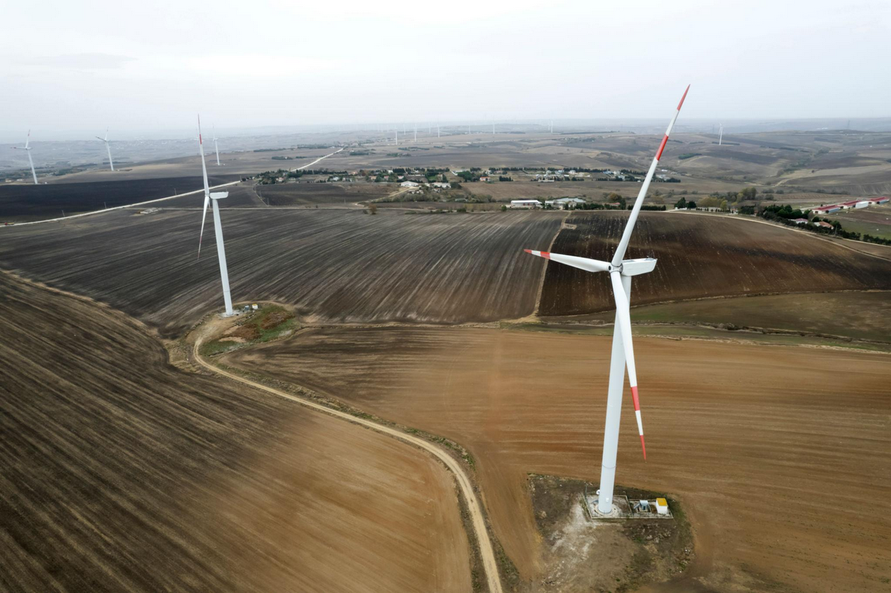
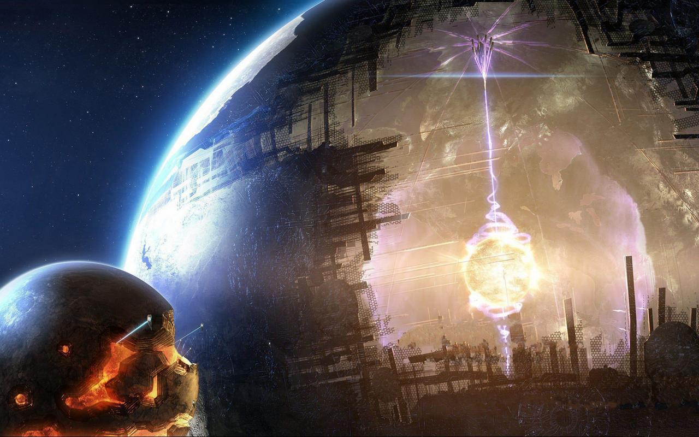

Teorie civilizačního vývoje ve vesmíru
Kardashev scale [Kardašova škála] je teoretický systém určující technologickou vyspělost civilizací podle množství energie, kterou dokážou využít[cite: 2]. Tuto myšlenku vytvořil sovětský astronom Nikolai Kardashev v roce 1964 jako způsob, jak klasifikovat možné mimozemské civilizace ve vesmíru[cite: 3].
Civilizace jsou rozděleny do několika hlavních kategorií označovaných jako Typ I, Typ II a Typ III[cite: 5]. Každý z těchto stupňů představuje obrovský technologický skok a výrazně vyšší kontrolu nad zdroji energie[cite: 6].
Lidstvo se v současnosti stále nenachází ani na úrovni Typu I cca 0,73, protože nedokáže plně využívat veškerou energii planety Země[cite: 7]. Přesto technologický pokrok naznačuje, že se naše civilizace postupně k této úrovni přibližuje[cite: 8].
Kardášovova škála je dnes často využívána ve vědě, futuristických teoriích i science fiction[cite: 9]. Pomáhá představit si, jak by mohly vypadat extrémně pokročilé civilizace schopné ovládat energii hvězd, galaxií nebo dokonce celého vesmíru[cite: 10].
Původ Kardashevovy škály
Nikolaj Semjonovič Kardašov [cite: 12]

Kardashevova škála byla navržena v roce 1964 sovětským astrofyzikem Nikolajem Kardashevem[cite: 13]. Tento koncept vznikl v rámci vědeckého projektu SETI (Search for Extraterrestrial Intelligence), který se zabývá hledáním mimozemských civilizací ve vesmíru[cite: 14].
Kardashev se snažil najít jednoduchý způsob, jak popsat a porovnat úroveň technologického vývoje různých civilizací, a to na základě množství energie, kterou dokážou využívat[cite: 15]. Základní myšlenka škály vychází z předpokladu, že s rostoucím technologickým pokrokem civilizace roste i její spotřeba energie[cite: 16].
Kardashev proto navrhl rozdělení civilizací do několika stupňů podle toho, jaký zdroj energie jsou schopny ovládat[cite: 17]. Tento přístup umožňuje teoreticky odhadnout, jak vyspělé by mohly být civilizace, které by mohly existovat mimo planetu Zemi[cite: 18].
Hlavním cílem Kardashevovy práce nebylo jen teoretické rozdělení civilizací, ale také pomoc při hledání mimozemského života[cite: 22]. Předpokládal, že velmi vyspělé civilizace by mohly být detekovatelné právě díky obrovskému množství energie, které využívají, a případným technickým stopám, které by zanechávaly ve vesmíru[cite: 23].
Typ I: Planetární civilizace
Typ I Kardashevovy škály, nazývaný také planetární civilizace, představuje úroveň, na které dokáže společnost plně využívat energii své domovské planety[cite: 25]. To znamená, že civilizace tohoto stupně by měla přístup ke všem dostupným zdrojům energie na planetě a dokázala by je efektivně řídit a přeměňovat na využitelnou formu[cite: 26].

Mezi hlavní zdroje energie patří sluneční záření, vítr, vodní energie, geotermální energie a další přírodní procesy[cite: 27]. Planetární civilizace by byla schopná tyto zdroje využívat v globálním měřítku a bez výrazných ztrát[cite: 28]. Zároveň by měla velmi pokročilé technologie pro ukládání energie a její distribuci po celé planetě[cite: 29].
Důležitým znakem tohoto stupně je také schopnost ovlivňovat planetární systémy[cite: 30]. Teoreticky by taková civilizace mohla řídit klima, předcházet přírodním katastrofám nebo optimalizovat využívání přírodních zdrojů tak, aby nedocházelo k jejich vyčerpání[cite: 31]. To by však vyžadovalo velmi vysokou úroveň technologického i společenského vývoje[cite: 32].
Současná lidská civilizace se nachází pod touto úrovni, přibližně na hodnotě kolem 0,7 stupně[cite: 33]. To znamená, že stále nedokážeme plně využívat energii Země a jsme závislí především na fosilních palivech, která způsobují ekologické problémy[cite: 34]. Přechod na Typ I by proto znamenal zásadní změnu v oblasti energetiky, například úplný přechod na obnovitelné zdroje[cite: 35].
Typ II: Hvězdná civilizace
Typ II Kardashevovy škály označuje hvězdnou civilizaci, která dokáže využívat energii celé své hvězdy[cite: 37]. V případě naší soustavy by šlo o využívání energie Slunce v téměř kompletním rozsahu, což je množství energie, které výrazně převyšuje současné možnosti lidstva[cite: 38].

Aby to bylo možné, taková civilizace by musela disponovat extrémně pokročilými technologiemi[cite: 39]. Často se v této souvislosti zmiňuje koncept Dysonovy sféry, což je hypotetická megastruktura obklopující hvězdu a zachycující její vyzařovanou energii[cite: 40]. Nejde nutně o pevnou kouli, ale spíše o síť zařízení nebo satelitů, které by sbíraly energii přímo ze zdroje[cite: 41].
Civilizace tohoto typu by pravděpodobně měla osídlené všechny planety ve své hvězdné soustavě a možná i umělé obytné struktury ve vesmíru[cite: 42]. Energie hvězdy by jí umožnila provádět projekty v obrovském měřítku, například stavbu velkých kosmických habitatů nebo meziplanetární infrastruktury[cite: 43].
Typ III: Galaktická civilizace
Typ III představuje nejvyšší původní úroveň Kardashevovy škály. Galaktická civilizace by dokázala využívat energii celé galaxie, tedy miliard hvězd[cite: 48]. V případě Mléčné dráhy by šlo o obrovské množství energie, které dalece přesahuje jakékoli představy současného lidstva[cite: 49].

Taková civilizace by musela být schopna mezihvězdného cestování ve velkém měřítku a pravděpodobně by měla osídlené tisíce nebo miliony hvězdných soustav[cite: 50]. Je možné, že by využívala automatizované systémy nebo samoreplikující sondy, které by se šířily galaxií a budovaly infrastrukturu pro sběr energie[cite: 51].
Energetické zdroje by zahrnovaly prakticky všechny hvězdy, černé díry a další kosmické jevy[cite: 52]. Civilizace by mohla řídit nebo využívat energetické procesy na galaktické úrovni, což je z dnešního pohledu zcela nepředstavitelné[cite: 53]. Typ III je často považován za hranici, kde se civilizace stává skutečně „galaktickou mocností“[cite: 54].

Stejně jako ostatní vyšší stupně Kardashevovy škály je i tento typ zatím pouze hypotetický[cite: 56]. Přesto pomáhá vědcům i filozofům uvažovat o tom, jaké možnosti může mít dlouhodobý vývoj inteligentních civilizací ve vesmíru[cite: 57].
Závěrečné zamyšlení
Kardashevova škála je zajímavý způsob, jak si představit, jak by se mohly civilizace vyvíjet podle toho, kolik energie dokážou využívat[cite: 58]. I když vznikla původně hlavně pro teoretické úvahy o mimozemském životě, dnes se často používá i jako jednoduchý model pro zamyšlení nad budoucností lidstva[cite: 59].
Z této škály je vidět, že rozdíly mezi jednotlivými úrovněmi nejsou jen o lepší technologii, ale o úplně jiném způsobu fungování celé civilizace[cite: 60]. Přechod z jedné úrovně na druhou by znamenal obrovskou změnu v tom, jak lidstvo získává a využívá energii, a v podstatě i v tom, jak žije[cite: 61].
Zároveň je ale potřeba brát tuhle škálu spíš jako zjednodušený pohled[cite: 62]. Neřeší všechno – například kulturu, společenský vývoj nebo to, jak by se civilizace mohla ubírat jinými směry než jen růstem spotřeby energie[cite: 63]. Je to tedy spíš nástroj pro představu než přesný popis reality[cite: 64].
I přesto je Kardashevova škála hodně zajímavá, protože nutí člověka přemýšlet o tom, kam bychom se jako lidstvo mohli dostat v budoucnu a jak malí zatím ve vesmírném měřítku vlastně jsme[cite: 65].